Descubra como usar Arachne em Hero Wars Alliance! Explore suas habilidades, estratégias, sinergias e os benefícios de seus talismãs. Aprenda a enfrentar Fafnir e equipes de agilidade de forma eficaz, enquanto maximiza o potencial de seu atordoamento e veneno. Liberte o poder de Arachne em suas batalhas!
| Atributos Principais | Detalhes |
|---|---|
| Posição: | Linha do Meio |
| Função: | Guerreiro, Controle |
| Classe de Glifo: | Controle |
| Atributo Principal: | Inteligência |
| Facção: | Progresso |
| Como obter Pedras de Alma: | Eventos, Baú Heroico, Campanha |
| Tier List 2025 | Ranque |
|---|---|
| Tier List Geral: | B+ |
| Ranque da Hidra: | B |
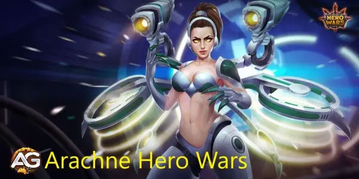
Arachne é uma das personagenss da facção de progresso e possui a habilidade de causar atordoamento na área. Ela é muito forte contra equipes de Keira e Karkh, além de outros heróis de agilidade.
Agora, com a chegada de Fafnir em Hero Wars, Arachne se torna uma grande aliada contra equipes de Fafnir, graças às suas habilidades de atordoamento por 5 segundos e também de envenenar inimigos em qualquer tipo de dano que ela cause. Certamente, é uma boa escolha. Sempre fico surpreso com Arachne forte em eventos especiais, mas ela não é vista frequentemente em equipes de final de jogo. Talvez isso mude com a chegada de Fafnir.
Antes de mergulhar na estratégia de uso de Arachne, é essencial entender suas habilidades e como elas podem ser usadas efetivamente em batalha:
A habilidade de Arachne de causar atordoamento em área é uma de suas principais vantagens. Este atordoamento pode interromper as habilidades dos inimigos e desequilibrar a equipe adversária.
Além do atordoamento, Arachne também tem a capacidade de envenenar seus inimigos. Isso adiciona um dano ao longo do tempo (DOT) significativo, enfraquecendo gradualmente os oponentes.
Arachne pode se beneficiar de sinergias com outros heróis. Compreender quais heróis complementam suas habilidades pode aumentar sua eficácia em batalha.
Arachne brilha como uma assassina de controle de grupo, explodindo inimigos, encadeando atordoamentos e caçando alvos fracos. Priorizar suas habilidades de forma inteligente libera todo o seu potencial destrutivo.
Se quiser saber mais sobre como funcionam as relíquias, confira nosso Guia Completo de Relíquias.
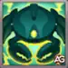
Invoca um monstro que investe contra o primeiro inimigo que vê. O monstro explode, causando (40% Atq. Mág. + 18000) de dano e atordoando os oponentes por 5,0 segundos. Esta é a habilidade icônica de Arachne, trazendo alto dano e longo controle de grupo.
Prioridade de Evolução: Muito Alta – É sua ferramenta mais impactante nas lutas, anulando linhas inteiras de inimigos.
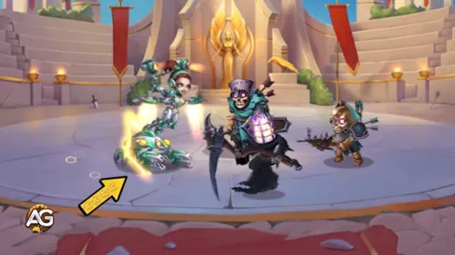
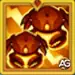
No nível 10 de Relíquia, Arachne invoca um segundo monstro. Ele investe contra o inimigo mais distante, explode causando (20% Atq. Mág. + 50) de dano e atordoa os inimigos próximos por 2 segundos. Isso faz sua pressão atingir tanto a linha de frente quanto a retaguarda.
Prioridade de Evolução: Muito Alta – Dobrar seus atordoamentos significa dobrar seu potencial de controle.
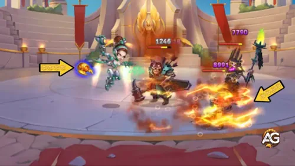
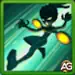
Arachne salta até o inimigo com menos vida, causa (Atq. Mág. + 12000) de dano com suas garras e depois retorna. Uma ferramenta rápida e letal de execução.
Prioridade de Evolução: Alta – Útil para finalizar inimigos frágeis e manter ameaça constante.
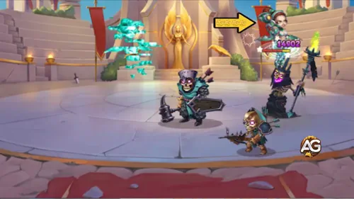
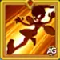
No nível 20 de Relíquia, se o Teleporte matar o alvo, a habilidade tem o tempo de recarga restaurado instantaneamente. Também recebe dano extra (Atq. Mág. + 100). Isso torna Arachne capaz de encadear mortes consecutivas.
Prioridade de Evolução: Alta – Transformar eliminações únicas em sequências de mortes traz enorme valor.
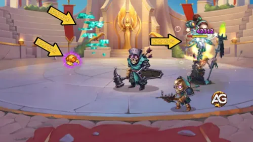
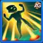
Atinge o inimigo mais próximo com espinhos, causando (70% Atq. Mág. + 12000) de dano e atordoando-o junto de inimigos próximos por 5,0 segundos. Outra forte fonte de controle em área.
Prioridade de Evolução: Média-Alta – Excelente habilidade, mas a primeira é mais forte e deve vir antes.
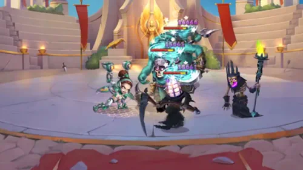
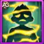
Toda vez que Arachne causa dano a um inimigo, ele é envenenado por 3,0 segundos, sofrendo (10% Atq. Mág. + 4500) de dano extra. Uma forma constante de pressionar, mas menos impactante que seus atordoamentos.
Prioridade de Evolução: Média – Bom dano contínuo, mas muito menos decisivo que suas habilidades de controle.
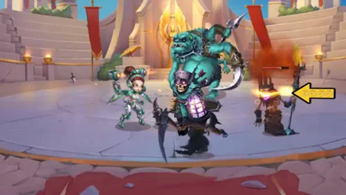
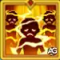
A cada 15 segundos, Arachne entra em modo sobrecarga por 4,0 segundos. Durante esse tempo, seus ataques básicos causam (50% Atq. Mág.) de dano mágico em vez de físico. Todo seu dano por 3 segundos também reduz a Defesa Mágica inimiga em (5% Atq. Mág.).
Prioridade de Evolução: Média – Melhoria decente para o dano da equipe, mas situacional em comparação com seus atordoamentos diretos.
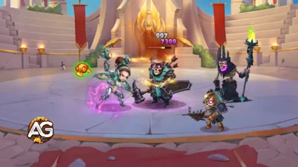
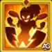
No nível 30 de Relíquia, qualquer ataque de Arachne que perfure Defesa Mágica sempre resultará em um acerto crítico. Embora poderoso na teoria, é muito mais situacional e depende fortemente de sinergias.
Prioridade de Evolução: Baixa – Chega muito tarde e depende de composições específicas, então deixe por último.
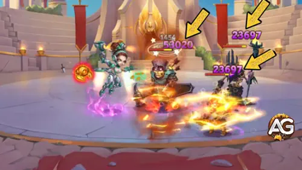
Arachne, uma das heroínas mais versáteis de Hero Wars Alliance, se beneficia significativamente de seus talismãs, que aprimoram seu dano mágico, sobrevivência e utilidade. Abaixo está uma análise comparativa de dois de seus talismãs: o Talismã da Determinação e o Talismã das Modificações. Cada talismã oferece vantagens únicas que atendem a diferentes estilos de jogo. Também fornecemos uma tabela comparativa detalhada para ajudá-lo a decidir qual talismã melhor se alinha com sua estratégia.
O Talismã da Determinação concede à Arachne 2000 pontos de inteligência, que aumentam diretamente suas capacidades mágicas. Cada ponto de inteligência fornece:
Além disso, este talismã oferece 3 slots de ataque mágico, cada um podendo atingir até 6500 pontos com rerolls. O ataque mágico aprimora todas as habilidades da Arachne, incluindo dano, controle e efeitos de atordoamento. Combinado com seu atributo inato de 40% de vampirismo, esse talismã a torna uma poderosa causadora de dano e resistente em batalhas.
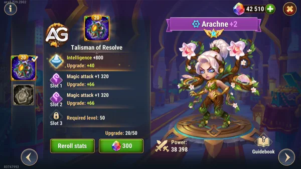
O Talismã das Modificações foca no aumento do potencial de acerto crítico mágico e penetração mágica da Arachne. Ele fornece:
Esse talismã é ideal para jogadores que desejam maximizar o potencial de dano explosivo da Arachne e garantir que suas habilidades atravessem eficazmente as defesas inimigas.
| Característica | Talismã da Determinação | Talismã das Modificações |
|---|---|---|
| Impulso de Atributo Principal | 2000 Inteligência | N/A |
| Benefícios da Inteligência | 6000 Ataque Mágico, 2000 Defesa Mágica | N/A |
| Slots Adicionais | 3 Slots de Ataque Mágico (até 6500 cada) | 3 Slots de Penetração Mágica (até 6600 cada) |
| Efeito Especial | N/A | Chance de Acerto Crítico Mágico (2,5x dano) |
| Melhor Para | Dano mágico contínuo, controle e sobrevivência | Dano mágico explosivo e penetração mágica |
Ambos os talismãs oferecem vantagens únicas, dependendo do seu estilo de jogo preferido. Se seu objetivo é aprimorar o dano mágico contínuo, controle e sobrevivência da Arachne, o Talismã da Determinação é a escolha ideal. No entanto, se você deseja maximizar seu potencial de dano explosivo e penetração mágica, o Talismã das Modificações é a melhor opção.
Arachne, como uma personagem versátil de Hero Wars Alliance, requer uma estratégia cuidadosa para maximizar seu potencial em combate. Abaixo estão as prioridades de evolução de Arachne, desde estatísticas até artefatos e skins.
| Prioridade | Estatísticas |
|---|---|
| 1 | Perfuração Mágica |
| 2 | Ataque Mágico |
| 3 | Inteligência |
| 4 | Vida |
| 5 | Armadura |
Perfuração Mágica: Aumentar a perfuração mágica permite que Arachne ignore parte da resistência mágica dos inimigos, aumentando assim o dano causado por seus ataques mágicos.
Ataque Mágico: O aumento do ataque mágico amplifica o poder de seus feitiços, tornando seus ataques mais letais.
Inteligência: A inteligência não só aumenta o ataque mágico de Arachne, mas também sua defesa mágica, tornando-a mais resistente aos ataques mágicos dos inimigos.
Vida e Armadura: Embora menos prioritárias do que as estatísticas ofensivas, aumentar a vida e a armadura de Arachne a tornará mais durável em combate, permitindo que ela permaneça ativa por mais tempo.
Os glifos seguem uma prioridade semelhante às estatísticas, com foco em aumentar o poder de ataque mágico de Arachne e sua resistência.
| Prioridade | Glifos |
|---|---|
| 1 | Perfuração Mágica |
| 2 | Ataque Mágico |
| 3 | Inteligência |
| 4 | Vida |
| 5 | Armadura |
Em artefatos, você deve priorizar o livro, pois aumenta a vida e o ataque mágico, depois a inteligência para ganhar mais ataque mágico e defesa mágica e, finalmente, a arma para dar armadura a toda a equipe.
| Prioridade | Artefatos |
|---|---|
| 1 | Livro |
| 2 | Anel |
| 3 | Arma (Bônus de Armadura) |
Nas skins de Arachne, concentre-se primeiro na saúde, se disponível, depois na inteligência para aumentar seus atributos principais, e por último concentre-se em mais ataques mágicos e armaduras.
| Prioridade | Skins |
|---|---|
| 1 | Perfuração Mágica - Skin+ |
| 2 | Vida |
| 3 | Inteligência |
| 4 | Ataque Mágico |
| 5 | Armadura |
Arachne não é um grande herói contra hidras, pois hidras são imunes a atordoamento e envenenamento.
| # | Heróis |
|---|---|
| 1 | Polaris, Orion, Juiz, Arachne, Julius |
| 2 | Polaris, Isaac, Juiz, Arachne, Julius |
| 3 | Ginger, Isaac, Juiz, Arachne, Julius |
| 4 | Lilith, Aidan, Xe`sha, Arachne, Machadinha |
| 5 | Lilith, Fobos, Dante, Arachne, Aurora |
| 6 | Jet, Ginger, Isaac, Sebastian, Arachne |
| 7 | Lilith, Celeste, Dante, Arachne, Aurora |
| 8 | Lilith, Xe'Sha, Dante, Arachne, Aurora |
| 9 | Sem Rosto, Celeste, Dante, Arachne, Aurora |
| 10 | Sem Rosto, Jorgen, Dante, Arachne, Aurora |
| 11 | Jet, Ginger, Isaac, Sebastian, Julius |
| 12 | Orion, Nebula, Dante, Arachne, Aurora |
| 13 | Lilith, Dante, Arachne, Andvari, Aurora |
Arachne, o 1º Robô Demolidor, traz uma mistura única de agilidade e devastação para o campo de batalha de Hero Wars Alliance. Seu conjunto de habilidades diversificado, que vai desde invocar monstros aranhas até atordoar inimigos com neurotoxina, faz dela uma personagem versátil e formidável em combate.
Com habilidades como Robô Demolidor e Ataque Subterrâneo, Arachne pode controlar o campo de batalha atordoando inimigos e causando dano significativo. Sua habilidade de Teleporte adiciona mobilidade, permitindo que ela se envolva estrategicamente e alveje inimigos com menos vida.
Além disso, a habilidade de Neurotoxina de Arachne adiciona uma camada de dano contínuo, tornando-a uma ameaça persistente para seus adversários. Ao envenenar inimigos a cada ataque, ela os enfraquece ao longo do tempo, contribuindo para o sucesso geral de sua equipe em batalhas.
Em conclusão, a habilidade de combate de Arachne, aliada às suas habilidades de atordoamento e envenenamento, solidifica sua posição como um ativo crucial em Hero Wars Alliance. Seja envolvendo-se em confrontos diretos ou perturbando formações inimigas, Arachne prova ser uma força a ser considerada, garantindo seu lugar como uma adição valiosa a qualquer equipe que busca a vitória.
Você gostou das nossas dicas do Guia da Arachne? Há algo que não entendeu ou gostaria de sugerir mudanças? Convidamos você a se juntar à nossa sessão de comentários na página do Alexandre Games Blog. Não hesite em expressar sua opinião, clarificar suas dúvidas e compartilhar sua sugestões.
Clique no botão abaixo para começar:
 Celeste
Celeste Keira
Keira Sebastian
Sebastian